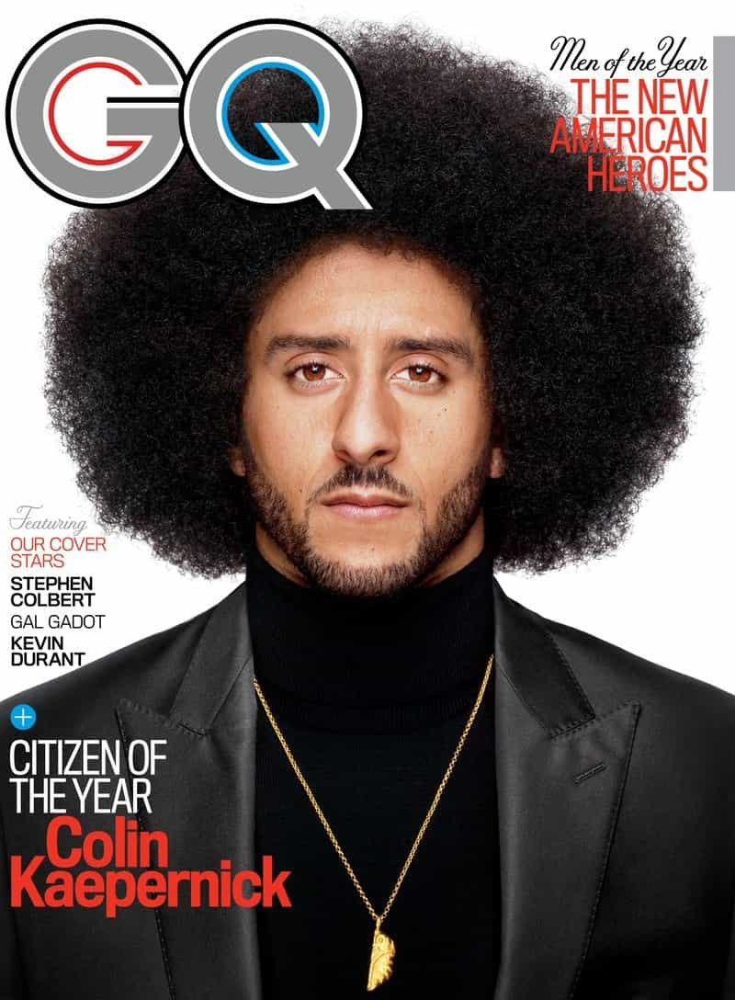
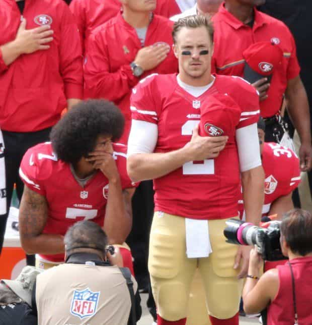
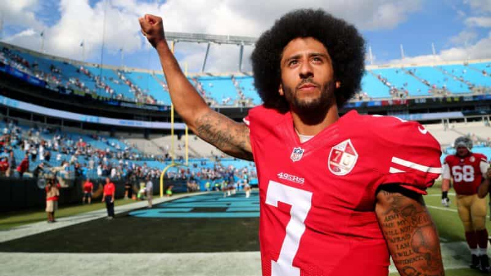

This account syndicates news from other media outlets.


He’s been vilified by millions and locked out of the NFL—all because he took a knee to protest police brutality. But Colin Kaepernick’s determined stand puts him in rare company in sports history: Muhammad Ali, Jackie Robinson—athletes who risked everything to make a difference.

In 2013, Colin Kaepernick was on the cover of this magazine because he was one of the best football players in the world. In 2017, Colin Kaepernick is on GQ’s cover once again—but this time it is because he isn’t playing football. And it’s not because he’s hurt, or because he’s broken any rules, or because he’s not good enough. Approximately 90 men are currently employed as quarterbacks in the NFL, as either starters or reserves, and Colin Kaepernick is better—indisputably, undeniably, flat-out better—than at least 70 of them. He is still, to this day, one of the most gifted quarterbacks on earth. And yet he has been locked out of the game he loves—blackballed—because of one simple gesture: He knelt during the playing of our national anthem. And he did it for a clear reason, one that has been lost in the yearlong storm that followed. He did it to protest systemic oppression and, more specifically, as he said repeatedly at the time, police brutality toward black people.
When we began discussing this GQ cover with Colin earlier this fall, he told us the reason he wanted to participate is that he wants to reclaim the narrative of his protest, which has been hijacked by a president eager to make this moment about himself. But Colin also made it clear to us that he intended to remain silent. As his public identity has begun to shift from football star to embattled activist, he has grown wise to the power of his silence. It has helped his story go around the world. It has even provoked the ire and ill temper of Donald Trump. Why talk now, when your detractors will only twist your words and use them against you? Why speak now, when silence has done so much?
At the same time, Colin is all too aware that silence creates a vacuum, and that if it doesn’t get filled somehow, someone else will fill it for him. In our many conversations with Colin about this project, we discussed the history of athletes and civil rights, and the indelible moments it called to mind, and we decided that we’d use photography—the power of imagery and iconography—to do the talking.

By the end of the 1960s, Muhammad Ali’s stand against the Vietnam War—he’d marched in Harlem with the Nation of Islam after he was drafted and refused to serve—resulted in him being locked out of his sport for three years, at the peak of his talent, much as Colin is now. He continued to train throughout that period, waiting for his chance to return to boxing. He was known for jogging in the streets, and kids would chase him—the People’s Champ, boosted in his darkest days by the joy of his truest fans. That’s why we decided to photograph Colin in public, in Harlem, among the men, women, and children he is fighting for. To connect him to a crusade that stretches back decades. And because Colin has spent a year as a man without a team, we worked with him to assemble a new one: ten of his closest confidants—artists, activists, academics, and one legend of the civil rights movement—who shared with GQ what Colin’s protest means to them, and what we all should do next.
Ava DuVernay
Filmmaker, Selma, 13th, and 2018’s A Wrinkle in Time
I see what he’s done as art. I believe that art is seeing the world that doesn’t exist. A lot of people excel at creativity—making TV, movies, painting, writing books—but you can be an artist in your own life. Civil rights activists are artists. Athletes are artists. People who imagine something that is not there. I think some folks see his protests, his resistance, as not his work. Not intentional. Not strategic. Not as progressive action. As if this was just a moment that he got caught up in. This was work. This is work that he’s doing.

The last time I saw him was the night after Trump called him out at the Alabama rally. It was a really dynamic weekend. I had dinner with him and Nessa [Kaepernick’s partner]. To be able to sit with that brother on this particular day—on the day between two historic cultural moments that swirled around him—was shape-shifting for me. Being able to observe that and witness his stillness and wisdom—I’m just really honored to know him. He’s sitting there and I’m sitting there and I’m like, “Look at this brother—he’s doing better than any of us would’ve done.” A lot better. With a lot more elegance.
Carmen Perez
Activist, executive director of The Gathering for Justice, which addresses mass incarceration and child incarceration
What I always tell people is, I could teach you about the law, I could teach you about the criminal-justice system—but I can’t teach you how to have heart. We don’t need a movement full of experts. We need people who care deeply to stand up and offer what they have, because there’s a role for everyone. You make music? Make some for the movement. You cook? Organizers need to be fed. You teach self-defense or yoga? Help people heal. You’re an athlete? Use your platform to raise awareness. It’s not about everyone trying to become the next Martin Luther King Jr., because he had clergymen and journalists and artists like Harry Belafonte. It’s about how we connect to our neighbor and offer our skill set. As Mr. Belafonte has said: Don’t pay me back—pay it back to the cause.
I want people to understand that even if incarceration doesn’t personally impact you, or police brutality doesn’t personally impact you, you can still be involved. How can we show these mothers who are suffering that we love them and we care about them? I often ask: Can we see our liberation bound to one another’s? I’m a proud Mexican-American and Chicana who deeply believes that black lives matter and that once black people are free, then my people will be free.
Don’t Miss: How American Football Became A Racket